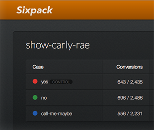

Begin in one language, end in another
Need to toggle a test variation in Javascript, track conversions in Ruby, and record a KPI in a Python service along the way? No problem, Sixpack is up for the challenge.

also on github: sixpack's client libraries
Need to toggle a test variation in Javascript, track conversions in Ruby, and record a KPI in a Python service along the way? No problem, Sixpack is up for the challenge.
Initiate a test with a few lines from your client library(ies) of choice. Once a user enters a test it will automatically show up in the web UI.
Sixpack has a simple, elegant web UI that presents all experiments together. See results, choose winners, analyze graphs, archive experiments, and more.
